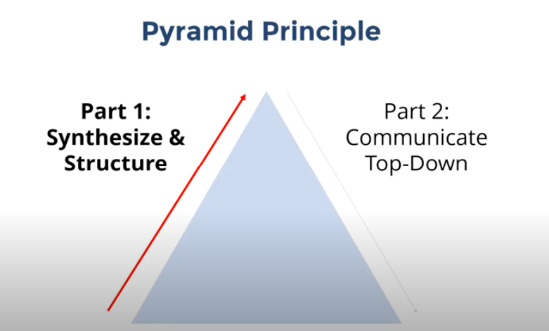

Minto Piramid principle Barbara Minto
[ImUni] Minto Piramid principle - Barbara Minto¶
Barbara Minto pyramid principle is the case for hierarchically structured thinking and communication.

- Go from 1 sentence to one paragraph to one document. From high level to low level.
- Organize all documents, your speech, your questions in form of pyramid. We will refer to this principle many times.
Examples of Piramidal:

There are 2 forms of hierarchies:
[Image:
How to ask complicated questions?¶
How to Name Titles for Documents¶
- Ask yourself how you will search for the document?
- Ask yourself how random person in the company should find this document without any specific knowledge via folder navigation.
How to write Agenda¶
It is extremely important to write agenda and plan for all meetings we do:
- Create meeting in Google Calendar
- Add link to Quip document in Google Calendar event
- Write in Quip document agenda for meeting
- During the meeting write action plan.
How to ask complicated questions?¶
- Don’t be afraid to ask questions if something is unclear. But ask it in a smart way.
- Start question with 1 sentence where you ask a high level question.
- Then provide details for questions.
- Then provide your best guess what do you think may be an answer. You always can guess.
- If your details were long then repeat question in 1 sentence again to finish the speech.
- It is refer to Structure Information In Minto PYRAMID: a03 “7 Principles and 60 rules” - How we do it?
How to answer complicated questions.¶
- Start answer with 1 high level sentence. You always can do it.
- Then provide details to your answer.
- If your details were longer than 1minute, then repeat question in 1 sentence again to finish the speech.
-
It is reference to Structure Information In Minto PYRAMID: a03 “7 Principles and 60 rules” - How we do it?
-
Dmitry Korzhov for some reason i cant copy past doc form quip page to obsidian. it copy pictures not like files but like text in the docuemnt it self and then obsidian is freezed. can you research why it is.
- You need click on document —> export to markdown and paste it in obsidian discuss
Last update:
September 28, 2022